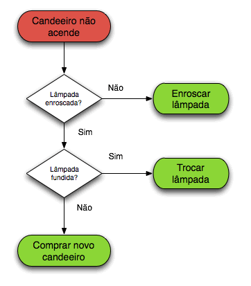
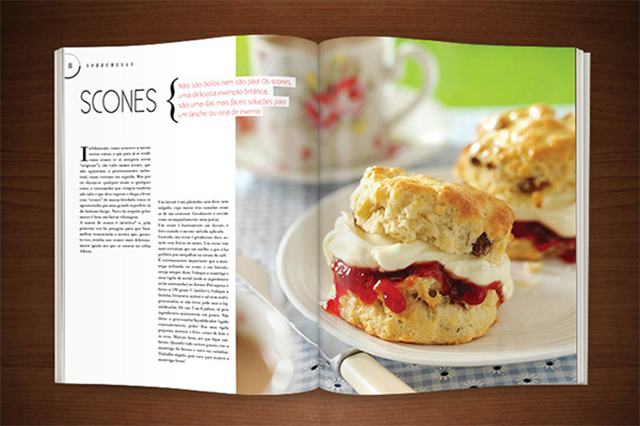
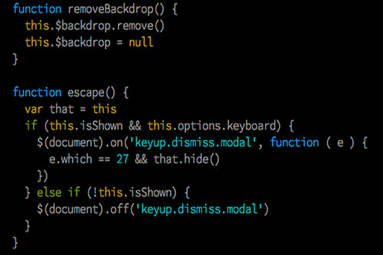

Programação de computadores
Olá, tudo bêm com voçê? espero que sim, se voçê gosta de computadores e informática vei ao lugar certo, vou compartilhar com voçês minha experiência de aprendizado de programação. Sem mais demoras vamos lá!
Algoritmos
Algoritmo é como se fosse uma receita de bolo, ou uma sequência de passos a ser seguidos para resolver tal problema ou situação. Um algoritmo funcionar não quer dizer que esteja certo, voçê pode dizer que ele esteja certo quando resolver o seu problema ou situação.

Por exemplo, crie um algoritmo da sua rotina diária:(Eu vou fazer o da minha mas voçê pode fazer da sua, se quiser anotar em um papel para ficar mais fácil de entender também.)
1º ao acordar:
levantar;
senão:
ficar deitado;
2º Depois de levantar:
escovar os dentes;
senão:
ficar com a boca fedendo;
3º Depois de escovar:
tomar café da manhã;
senão:
ficar com fome;
4º Após tomar café da manha:
se estiver no horário da aula:
entrar no link;
senão:
esperar;
5º Após a aula:
almoçar;
senão:
ficar com fome denovo;
6º Após almoçar:
Se estiver na hora:
trabalhar de Jovem Aprendiz(Home Office);
senão:
esperar;
7º Depois que terminar o trabalho Home Office e lanchar:
Me arrumar e ir trabalhar de motoboy;
8º Ao chegar das entregas:
jantar;
9º Após jantar:
tomar banho e estudar;
10º Após estudar:
dormir;
Fim do algoritmo!
Algoritmos computacionais
Os computadores funcionam a base de três passos, são eles: entrada de dados, processamento desses dados, e saída(resposta ao usuário).
obs: Automatizar processos nem sempre é a solução para algunsproblemas. É correto imagnar que o usuário terá a capacidade de executar o que precisar.
~Jacob Moura.
Linguagem de programação
A linguagem de programação é como se fosse um idioma de programação. Existem mais de mil linguagens de programação, cada uma com seu objetivo específico, mas todas seguem a mesma lógica então não cabe dizer qual é a melhor linguagem de programação. Se voçê for aprender programar recomendo a aprender lógica de programação antes, assim facilitará o seu aprendizado, faça um cursinho breve para entender como funciona assim vc não ficará perdido ao ver os códigos de programação.